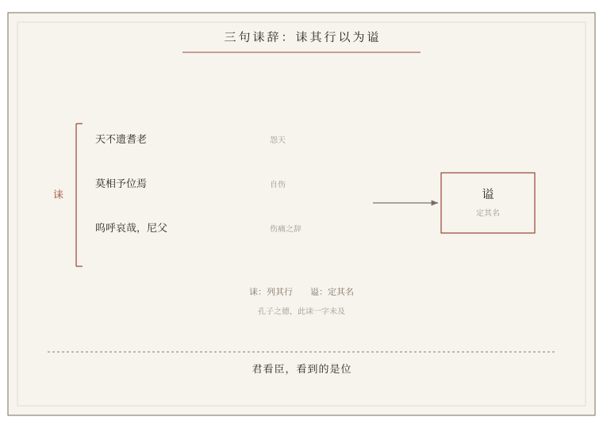

檀弓上 · 三·一百一十六 · 第 319 课
鲁哀公诔孔丘曰：「天不遗耆老，莫相予位焉。呜呼哀哉！尼父！」
说什么事：孔子卒于哀公十六年四月己丑。哀公欲为作谥，先列其行以为诔。诔只三句：天不把老人留给我，没有谁帮我守这个位了；痛哉，尼父。
落在哪一层：以「诔—谥」量一生。论「诔是给人做结论的文体，而君的结论只见其位」。
为何编在此位：三百一十八课论「位」，此课把「位」推到尽头——一个君看着一个臣死，看到的最后一样东西，还是位。
【经】魯哀公誄孔丘曰：「天不遺耆老，莫相予位焉。嗚呼哀哉！尼父！」
【注】誄其行以為謚也。莫，無也。相，佐也。言孔子死，無佐助我處位者。尼父，因且字以為之謚。
【疏】此一节论哀公诔孔子之事。孔子以哀公十六年夏四月己丑日卒，哀公欲为作谥；作谥宜先列其生时行状，谓之为诔。「曰天不遗耆老，莫相予位焉」者，作诔辞也；遗，置也；「耆老」谓孔子也；莫，无也；相，佐也；言上天不置孔子，故无复佐助我处于位也。「呜呼哀哉」，伤痛之辞也。「尼父」，「尼」则谥也；父且字甫，是丈夫之美称，称字而呼之「尼父」也。
诔 列其生时行状之辞，为作谥之先。
谥 死后所定之称。
遗 注「遗，置也」。天不把此人留置世间。
耆老 年老而有德者。此指孔子。
莫 无。
相 佐。
予位 我之处位。注「处位」，谓君位。
尼父 「尼」为谥，「父」为丈夫之美称。
鲁哀公诔孔子说：「上天不把这位老人留给我，没有谁再帮我守这个位了。痛哉啊痛哉，尼父！」
诔者，列行以为谥。故诔不是哭，是「作结论」。
哀公此诔只三句：一句怨天（天不遗耆老），一句自伤（莫相予位焉），一句呼字（呜呼哀哉尼父）。由天及己，由己及人。
三句之中，孔子之德一字未及。通篇是「我失去了一个帮手」。这是诔的限度，也是君的限度。
第一层 诔是文体，不是哭辞 注「诔其行以为谥也」。诔的功能是「列行」，为后面的「定谥」提供依据。所以诔有体、有法，不是随口哭出来的话。
今人写悼词，多求「感人」；古人作诔，先求「可据」。感人是效果，可据是本分。
第二层 三句的次序：天、己、人 先「天不遗耆老」——怨天。次「莫相予位焉」——自伤。末「呜呼哀哉，尼父」——呼字。
这个次序不是修辞，是礼的次序：哀自天起，落于己，终于人。凡诔皆如此起手，故读一句即知全体。
第三层 「尼父」：谥与字的合用 注「尼父，因且字以为之谥」。疏补：「尼」则谥也，「父」且字甫，是丈夫之美称，称字而呼之。
一个人的名，死后要换成另一套称呼：谥定其行，字存其美。称呼一换，此人在礼的世界里就换了位置——从「某人」变成「可称者」。
第四层 君子之诔，只见其位 注一句最要紧：「言孔子死，无佐助我处位者。」孔子之德，哀公一句未及；所惜者，是没人帮我守位。
这不是哀公一人之陋，是「君」这个位置的视野：君看臣，看到的是位。故《表记》说「君子不以辞尽人」——不以一辞定一人之全。哀公此诔，是「以辞尽人」的反面例：辞只见位，人不见。
与今日何干 今人悼词，多列功绩；古人诔辞，多述行状。二者皆有所见，亦皆有所蔽：列功绩者，见其事不见其人；述行状者，见其形不见其心。分寸在两者之间：既列其行，又不以行尽其人。
| 左 | 右 |
|---|---|
| 诔 | 列其行 |
| 谥 | 定其名 |
| 天不遗耆老 | 怨天 |
| 莫相予位 | 自伤 |
| 呜呼哀哉 | 伤痛之辞 |
| 尼父 | 谥加美称 |
| 三句 | 非全诔 |
| 佐位 | 君之所见 |
画一处朝堂，视点平视。左侧阶上一人（君），衣冠整肃，侧身向右；右侧阶下一几一案，几上空无一人，案上一卷简展开。君与空几之间留一道宽空。不画人面、不写文字。赭色只用在案上那卷简的一道边。
